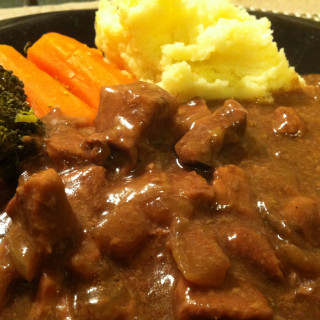

Steak and Kidney

DESCRIPTION
I love to make this steak & kidney in the slow cooker and serve over mashed potatoes.
The meat becomes so tender. The amount of kidney is enough to give a unique flavour without being too strong or overpowering.
If its diced finely you'd hardly know it was there.
INGREDIENTS
- 1 kg chuck or topside steak ; diced
- 250 g beef kidney ; diced
- 2 onions ; diced
- 2 cups water
- 1 beef stock cube
- 1/3 cup flour
- 1/2 cup water extra
- 1 tablespoon soy sauce
- 1/2 teaspoon pepper
- Pastry Pie Top (Optional)
- 375 g pack puff pastry
- 1 egg yolk
STEPS
- Place steak and kidney in large pan with onions, water and crumbled stock cube. Bring to boil, reduce heat and simmer covered 1½ hours or until meat is tender. (Alternatively place in a slow-cooker and cook on low 7-8 hours)
- Combine flour with extra water, pepper and soy sauce. Add to steak and stir until mixture re-boils and thickens. (If using a slow-cooker add this mixture for the last 1/2 - 1 hour of cooking. Depending on your slow cooker you may need to turn the heat to high for a while so that the mixture simmers and the mixture thickens)
- The steak and kidney may be served with dumplings, on its own with mashed potato and other steamed vegetables or with a pastry pie top.
Pie Top: If making a pie top cool the meat mixture and pour into an ovenproof dish with a china egg cup in the centre to support pastry. Roll and cut pastry, then fit around moistened rim of dish. Make small cuts in pastry edge creating a scalloped effect. Brush top lightly with beaten egg. Make two slits in top of pastry to allow steam to escape. Bake in a hot oven (220°C) 10 minutes, then reduce to moderately hot (200°C) and bake for a further 20-25 minutes until pastry is golden brown and cooked through.